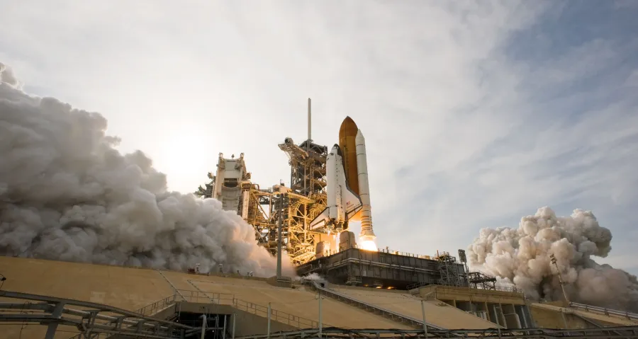
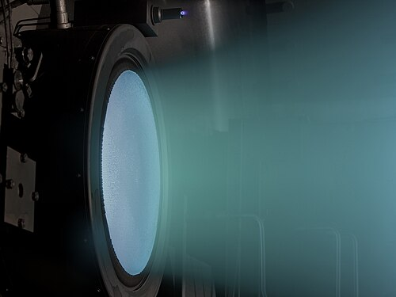
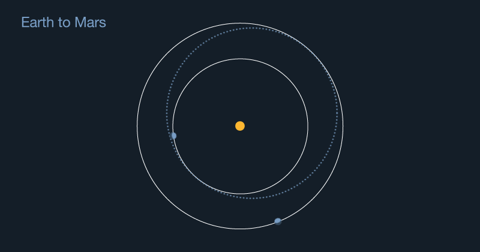
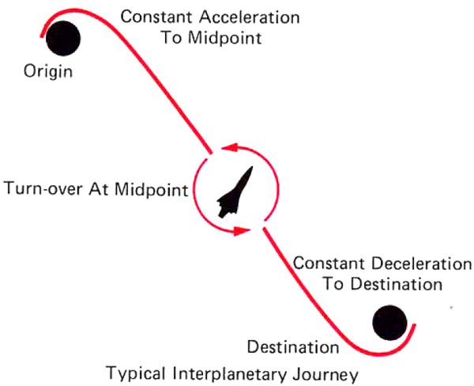

Knowledge of orbits by itself only allows a wanderer of the stars to visit the countless strange places of space in their dreams. To truly reach the celestials and experience the infinite vastness of the void yourself, you must make use of the mighty machines made by mortals to challenge the gods in their lofty abodes: rockets, the wings that power the flight of all starfarers.
[ Starfarer's Tome: Rocket Dynamics ] · continues the series from Charting the Heavens
Getting anywhere requires a means of movement. Cars and creatures push against the ground to move. Ships push back water. Planes and helicopters push against air to move or gain lift. All forces involve a pair of objects, and a force is necessary for any change in velocity. Wanderers of the void might not be interested in staying stationary, or on a single trajectory forever.
You as a starfarer don't have the luxuries of the spoilt planet-dwellers. You don't have a wall in space to push against. You must bring this wall, something to push against, along with yourself on your ride. Rockets are vehicles that accelerate by expelling propellant at some velocity.
A short history of rockets
Rockets have a long and interesting history. Even before their working principles were laid down formally, rockets came about through technological advancement and engineering, which often predate the underlying scientific principles. Initially used in festivals as fireworks, they were later used by the Chinese in warfare, from the 13th century onwards, to propel a mass of arrows at great speed. They later spread to other places like the Mongol Empire and Europe.
The laws behind them
Some of the core principles on which rockets work were formalised by Isaac Newton in 1687 CE, in the Philosophiæ Naturalis Principia Mathematica. These are the three famous laws of motion:
- First law: an object retains a constant velocity (which may be zero) as long as there is no net force acting on it.
- Second law: the net force on an object at any instant is the product of its mass and its acceleration at that instant, F = ma.
- Third law: every force occurs in a “pair”: each force involves two bodies, on which the same force acts with equal magnitude but opposite direction.
The rocket equation
The first person to suggest the use of rockets in space exploration was Konstantin Tsiolkovsky. The famous Tsiolkovsky rocket equation, published in 1903 in a Russian aviation magazine, is derived from the laws of motion and the laws of conservation of mass-energy and momentum.
- ΔV (“delta-V”): the change in velocity of the rocket after expending propellant
- Ve: the velocity of the propellant expelled from the rocket
- M0: the initial mass of the rocket
- Mf: the final mass of the rocket
- MR (M0 / Mf): the “mass ratio”, a commonly used metric for the amount of propellant
If mathematically inclined, the aspiring spacefarer may derive this equation themselves with simple knowledge of calculus and the laws of motion. The process is simple: conserve the total momentum of the craft and its propellant, then integrate over time. It is nothing the computers of a good spacecraft can't handle.
Specific impulse
Specific impulse is a term spacefarers will often come across. It is a convenient way to measure the efficiency of a reaction mass engine (i.e. a rocket). It measures how efficiently the engine converts some mass of propellant into some change in velocity. It will later be seen that high propellant efficiency comes at the cost of low energy (and time) efficiency, depending on the mission profile. The formula is:
A high exhaust velocity means a higher specific impulse. This means that the greater the velocity you expel your propellant with, the more delta-V your spacecraft gains for the same mass of propellant. This is rather intuitive so far.
The first liquid-fuelled rocket was launched in 1926 CE by Robert H. Goddard, who was convinced of the efficiency of the hydrogen and oxygen fuel and oxidiser combination.

Fuel, oxidiser and propellant
The distinction between fuel and oxidiser is an important one for chemical rockets, which are based on combustion reactions:
- Fuel: a substance that combusts to create rapidly expanding gases
- Oxidiser: a substance that facilitates the combustion reaction, like oxygen
Various fuels have been used throughout the ages. Solid ones include gunpowder, ZS (zinc-sulfur) propellants, and composite propellants like those based on ammonium nitrate. Liquid ones include hydrogen, methane and hydrazine, liquefied for various reasons such as reducing volume. Oxidisers in practice include atmospheric oxygen, LOX (liquid oxygen), nitric acid and hydrogen peroxide.
Both these substances constitute the propellant in chemical rockets. However, there is another classification of the components of propulsion that is more fundamental, though not too useful for chemical rockets, as will be seen:
- Fuel: a substance that provides energy for expelling reaction mass (propellant)
- Propellant: a substance that is expelled to give a rocket its delta-V
Under this classification, the “fuel” in chemical rockets is both fuel and propellant, and so is the oxidiser. This is because the energy is acquired from a reaction between the fuel and oxidiser (making them both fuel), while the products released from combustion are expelled as propellant (making them both components of the propellant).
Chemical rockets generally have low specific impulse, so your spacecraft can't get a lot of delta-V even by expending 90% of its mass as propellant.

High exhaust velocity engines
So you think chemical rockets, commonly used to launch from a planet, won't cut it for your trek through the void? You've made the right call. Enter rocket engines with high exhaust velocities.
Contrary to chemical rockets with their measly mileage (“delta-V-age” or “speedage” in our case, if you will), engines with high specific impulse can get a tremendous amount of delta-V from a small amount of propellant. With the incredible distances involved in space travel, these are the engines that make it possible.
An example of a high specific impulse drive from the 21st century is the NASA Evolutionary Xenon Thruster (NEXT), a type of ion engine with an exhaust velocity of 40 km/s. It was used in the DART (Double Asteroid Redirection Test) programme, a means of defence against objects threatening humanity on Earth.

Other examples of these drives are the Variable Specific Impulse Magnetoplasma Rocket (VASIMR), with a predicted exhaust velocity of 50 km/s, and the experimental Dual-Stage 4-Grid (DS4G) electrostatic ion thruster, with an exhaust velocity of 210 km/s. And yes, that is kilometres per second. Get used to large numbers, or you'll make a fool of yourself in the spacefaring profession.
Now it would be natural for you to ask why we use chemical rockets at all. But that is where you would differ from a spacefarer who didn't leave the Tome unfinished.
High gear and low gear
Most things unfortunately have both advantages and drawbacks. You are probably familiar with the low and high gear of wheeled vehicles like cars and trucks. Though utterly insignificant against the wings of fire that conquer the void, they serve well enough as an analogy. Low gear in automobiles gives better acceleration, while high gear maintains better top speed. Simply put, low gear is about power, and high gear is about mileage. “High gear” and “low gear”, while originating from automobiles, are popular in spacecraft circles as informal descriptions of types of drives.
Chemical rockets can be described as low gear, with terrible propellant efficiency but great thrust power, which is necessary to lift off from the oppressive gravity of planets like Earth. Ion engines can be called high gear, with great efficiency but requiring lots of energy for a small amount of thrust, which wouldn't be enough for liftoff but is great for travel in low gravity. In short, if we take two theoretical engines with the same mass ratio and energy source:
| Specific impulse | Thrust | Good for | |
|---|---|---|---|
| Low gear (chemical) | Low | High | Lifting off from planets |
| High gear (ion) | High | Low | Efficient travel in low gravity |
Some types of spacecraft can “shift gears”, changing their exhaust velocity to suit their current mission. Their power source may or may not remain the same when they do, but the effect of shifting gears is best seen when energy consumption remains the same. This can be seen from the formula:
With the concepts shown so far, you have your spacecraft basics covered. But nothing helps cement information better than working examples.
Budget issues: the energy version
The type of spacecraft you choose for your space journeys depends on the amount of energy you have available. Trajectories can differ wildly, from roundabout transfer orbits that take ages to brachistochrone trajectories that zip through the system caring little for such trivial problems as moving planets and gravity.
For the entirety of the 20th century CE and much of the 21st, space travel was constrained by energy. The order of the day was to limit the delta-V of missions as much as possible and conserve power and propellant, with missions having more or less fixed travel times and launch windows. The less delta-V one took (through burning engines), the better. This was achieved through means such as gravity assists and multiple stages. One big benefit of this type of optimisation is being able to send larger payloads.
Trajectories that optimise delta-V have a few characteristics. They wait for favourable launch conditions (like proper planetary positions), and generally only burn their engines for short bursts (compared to the total travel time) when making manoeuvres like transfer orbits.

Brachistochrone trajectories
On the other end of the spectrum, like some of the higher-end, power-hungry spacecraft used by spacefarers with more money than they can spend, is the type of spacecraft that optimises for mission time instead of delta-V. While the differences between delta-V-optimised and time-optimised spacecraft form a spectrum, the mission profiles at the other extreme are radically different from those using transfer orbits to save energy and propellant.
Very high-energy spacecraft use what are popularly called brachistochrone trajectories, from the Greek words brakhistos, meaning “shortest”, and khronos, meaning “time”. These spacecraft generally burn their engines for the entire duration (or the majority) of their journey.
They don't have to care about gravity with their powerful engines. They simply point at where their destination will be when they reach it, burn their engines for roughly half the time, and then flip around and burn in the reverse direction to slow down, so as not to smack into the destination when they arrive. Thus these are also commonly called “flip & burn” trajectories.

There are many cases where the ideal trajectory involves a coasting phase with engines off that might take up as much as a third of the journey, but the core concept of “flip & burn” holds regardless.
Welcome to the Starfarer's Shipyard
Now that you're familiar with the very basics of rockets, you can finally choose a spacecraft of your very own from the highly acclaimed, internationally praised, seven-times winner of the Inner Planets Engineering Contest, thrice holder of the Innovation of the Year Award, ten-times champion of the… sorry, where were we? Yes, you can now buy your own vessel of the void from the Starfarer's Shipyard™!
The Shipyard has filtered and prepared two spacecraft options to suit your needs. These are the powerful ones, as we have assumed from your readership of the Tome that you aren't in the 21st century. Pick one that catches your fancy.
| Model | Exhaust velocity | Delta-V | Full burn time |
|---|---|---|---|
| Sloth III | 1,000 km/s | 346.57 km/s | 28.94 days |
| Envy IV | 500 km/s | 173.29 km/s | 7.23 days |
Both spacecraft have: mass 1,000 tons, mass ratio 2.0, power 100 GW.
Now that you've chosen a spacecraft, the Shipyard has prepared three missions, out of which you have to attempt two. Try to pick the two which your spaceship would be better suited to, compared to the other option. While both spacecraft will be able to reach virtually any destination if you simply add in a coast phase, one of them will be better suited to a particular trajectory, as generally lower delta-V requires less energy while using more propellant.
| Departure | Destination | Distance |
|---|---|---|
| Mercury | Venus | 31 million km |
| Earth | Mars | 225 million km |
| Jupiter | Neptune | 646 million km |
Distances are for a rough idea. Your ship computers should handle the heavy lifting. Have an eventful journey, spacefarer! Hopefully you've chosen well, but if not, you'll find out soon enough.
Key takeaways
What to remember
- Rockets accelerate by throwing propellant backwards, which follows from Newton's laws. In space there is nothing else to push against.
- The Tsiolkovsky equation links delta-V to exhaust velocity and the mass ratio, and specific impulse measures how efficiently an engine uses propellant.
- Chemical rockets are “low gear”: high thrust, low efficiency. Ion engines are “high gear”: low thrust, high efficiency.
- Missions either save energy with transfer orbits, or save time with “flip & burn” brachistochrone trajectories.
References and sources
- Atomic Rockets: Shifting Gears
- Isaac Newton, Philosophiæ Naturalis Principia Mathematica
- NASA, Brief History of Rockets
- NEXT: NASA technical report (archived)
- VASIMR: Ad Astra Rocket Company (archived)
- DS4G: ESA and Australian team develop breakthrough in space propulsion (CORDIS)
Image sources. Saturn V: NASA. Goddard: National Museum of the US Air Force. Space Shuttle: NASA. NEXT: NASA. Hohmann transfer: NASA. Brachistochrone (credited to “the Traveller Book”, Game Designers' Workshop): Atomic Rockets.